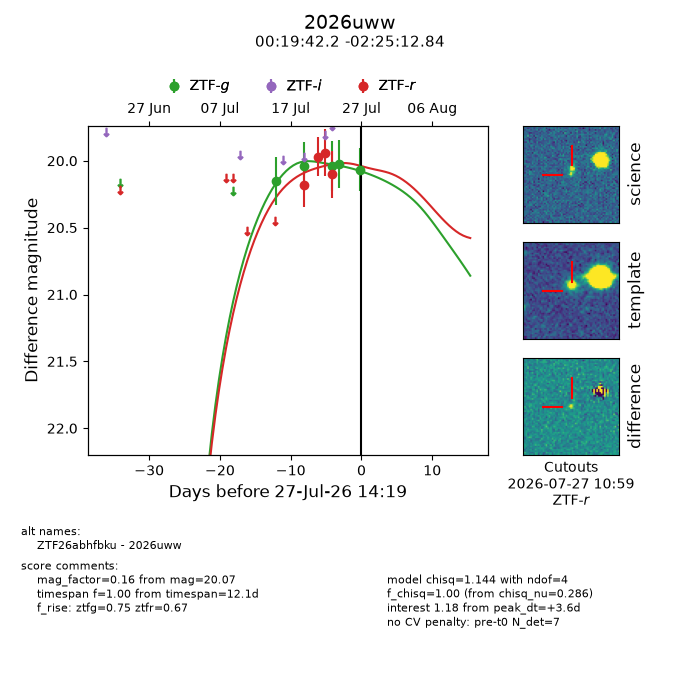
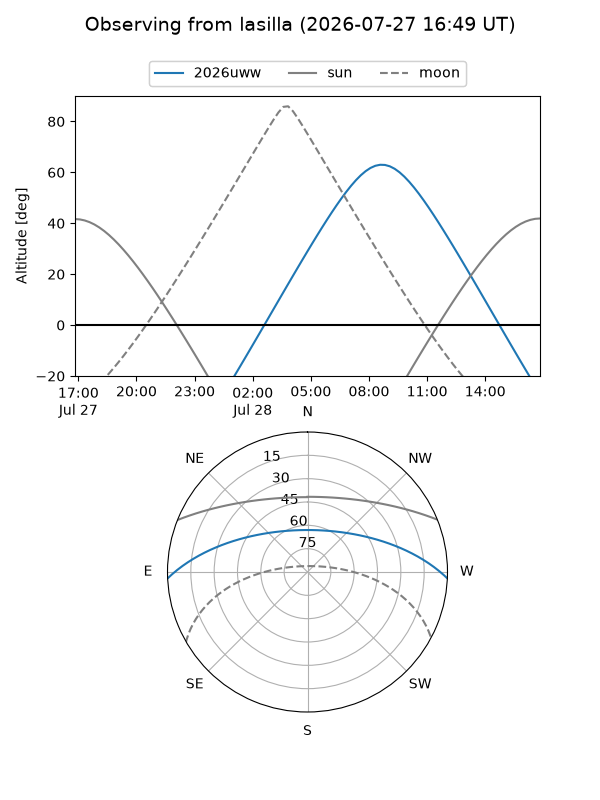
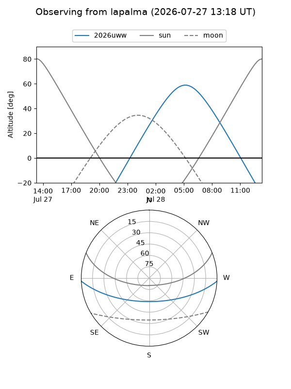
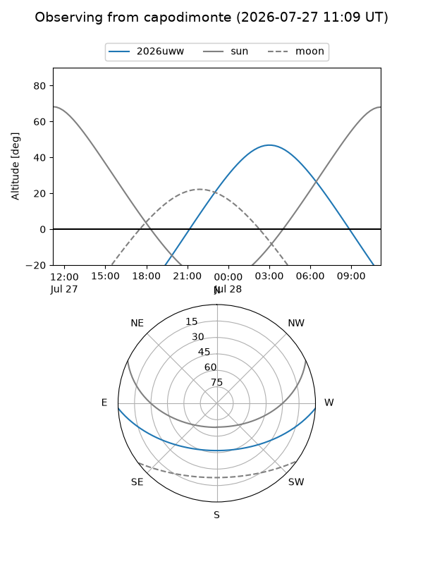
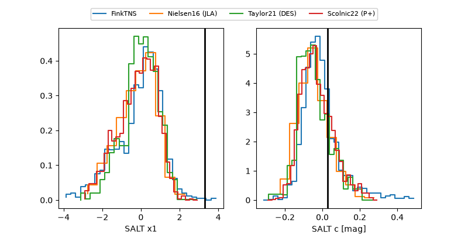

2026uww
Target 2026uww at 2026-07-27 14:22
Aliases and brokers:
FINK-ZTF: ztf.fink-portal.org/ZTF26abhfbku
Lasair-ZTF: lasair-ztf.lsst.ac.uk/objects/ZTF26abhfbku
ALeRCE-ZTF: alerce.online/object/ZTF26abhfbku
YSE-PZ: ziggy.ucolick.org/yse/transient_detail/2026uww
TNS name: wis-tns.org/object/2026uww
Direct TNS query: direct search
alt names
ZTF26abhfbku (ztf,fink_ztf)
2026uww (tns,yse)
Coordinates:
equatorial (ra, dec) = 4.9260,-2.42023
equatorial (HMS+DMS) = 00:19:42.24,-02:25:12.84
galactic (l, b) = (104.4942,-64.15007)
Flags:
TNS type: nan
peak dt: +3.6
Photometry:
last ztfg=20.07, ztfr=20.10
5 ztfg, 4 ztfr detections
Lightcurve

Visibility



Additional plots
